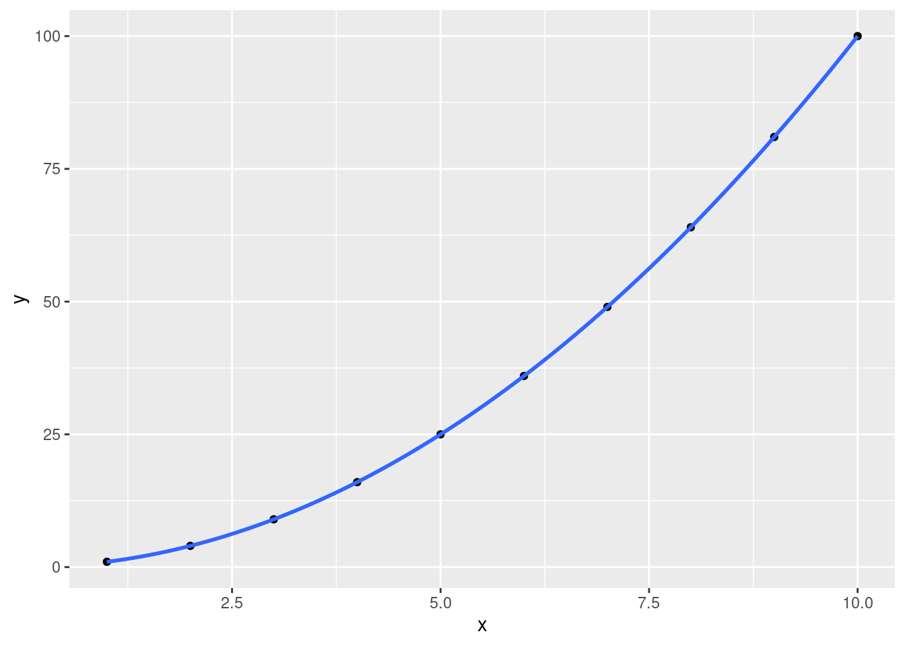
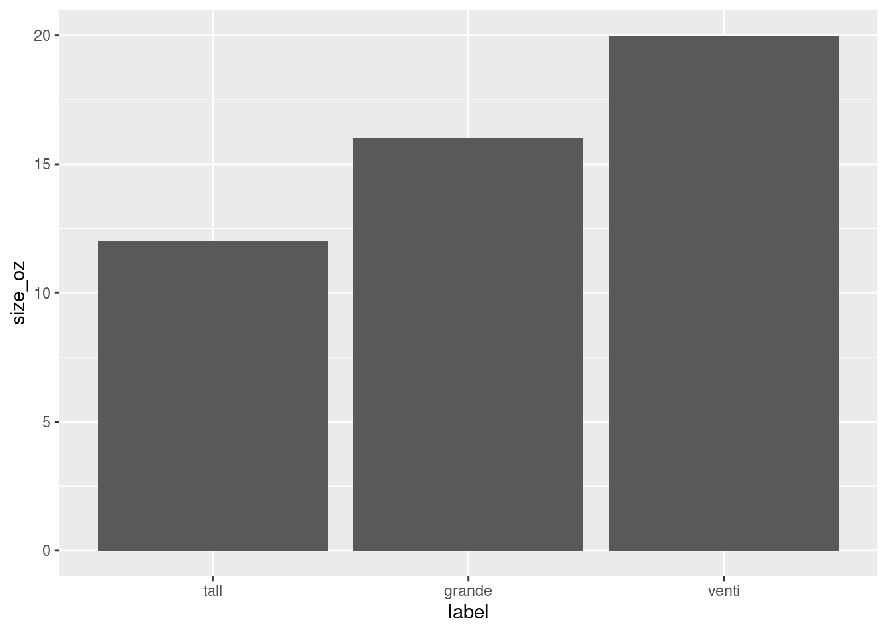
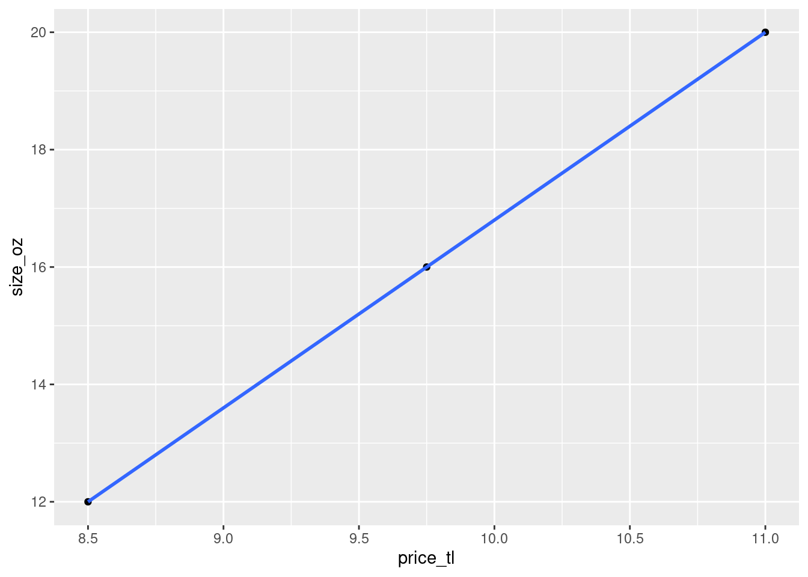
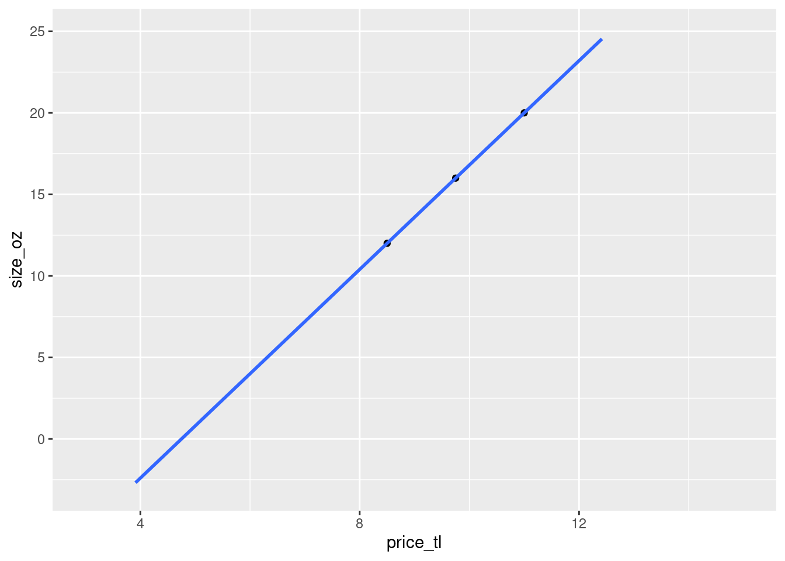
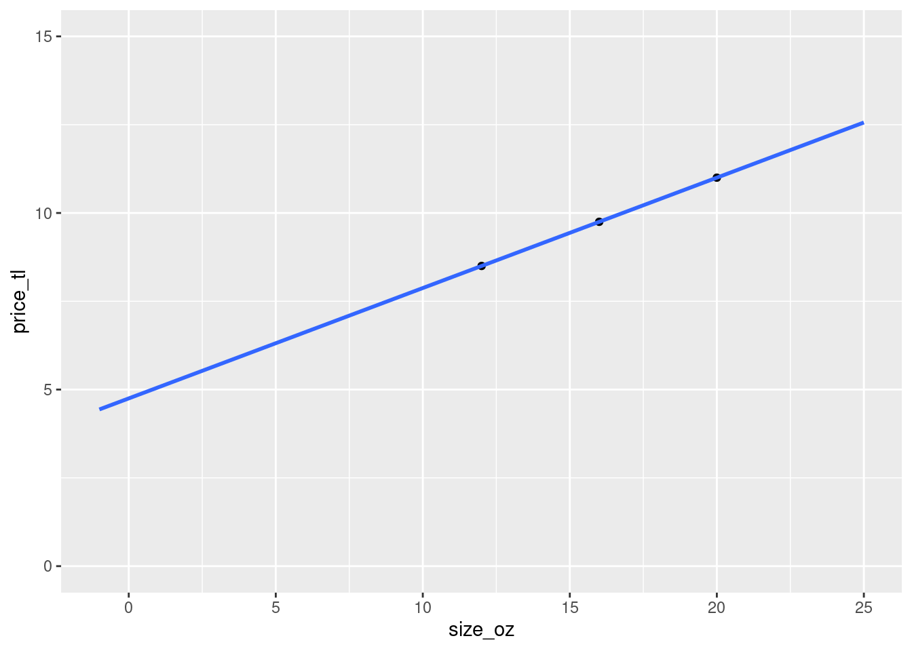

Chapter 1 Introduction
1.1 Introduction to R
- R is a open-source, freely available statistical programming language.
- R Studio is the most commonly used interface to R.
- Originally developed at Bell Labs in the 1980s as the S programming language.
- Modular, most of the functionality is in code libraries called packages.
- Literate programming and reproducible research with knitr and markdown.
1.2 The Basics
- You can think of R as a really fancy calculator, with a great way of handling data.
- The main interaction happens in the source code window (by marking code, and pressing Ctrl+R or Apple+R), and on the R console.
Addition
## [1] 3Subtraction
## [1] 1Multiplication
## [1] 6Division
## [1] 0.6666667Exponentiation
## [1] 81.3 Assignment
Values can be stored in variables, which have to be named. You might remember the concept from math; the \(x\) in \(2 = 0.5*x\) is a variable name.
Variables are created implicitly, by being assigned a value. This is done using the R assignment operator: <-.
For example, let’s assign 2 to var_name:
Now, let’s save the result of a complex expression …
… and retrieve it later …
## [1] 100… or combine with other variables.
## [1] 2001.4 Evaluation
Every expression evaluates to a value.
R displays the value an expression evaluates to for almost every expression except assignment.
The result of the addition is shown:
## [1] 2- For the assignment, nothing is shown:
1.5 Operators
Variables or expressions can be compared with others.
- The operator
==tests for equality:
## [1] TRUE- The operator
!=tests for inequality:
## [1] FALSE- Don’t confuse
==with=. The latter performs assignment (just like<-):
Variables or expressions can be compared with others.
- What do you think <, >, <=, and >= test for?
## [1] TRUE## [1] FALSE## [1] TRUE1.6 Using R Help
- Let’s say you forgot the difference between
=,==, and<-.
1.7 Data Types
In R, values have types:
| Data Type | Examples |
|---|---|
| Integer (Numeric): | …, -3, -2, -1, 0, +1, +2, +3, … |
| Double (Numeric): | most rational numbers; e.g., 1.0, 1.5, 20.0, pi |
| Character: | "a", "b", "word", "hello dear friend, ..." |
| Logical: | TRUE or FALSE (or: T or F ) |
| Factor: | Restricted, user-defined set of values, internally represented numerically (e.g., Gender {‘male’, ‘female’, ‘other’}) |
| Ordered factor: | Factor with an ordering (e.g., Starbucks coffee sizes {‘venti’ > ‘grande’ > ‘tall’}) |
Types matter when comparing:
## [1] FALSETypes also matter for other operations.
## Error in my_apples + my_oranges: non-numeric argument to binary operator## [1] 2.11.8 Determining Data Types
When unsure, we can ask R about the type of a variable:
## [1] "double"## [1] "character"## [1] "double"1.9 Packages
Most of R’s functionality is located in packages contributed by users. In this course, we will use the plotting functionality of ggplot2. In chunks like the one below, lines that include a single # are the comments. You do not have to run them; they are there to inform you while reading this book.
# install ggplot2
install.packages("ggplot2")
# install other packages we will use in this course
install.packages(c("tidyverse", "magrittr", "Hmisc"))
# load ggplot2
library(ggplot2)Some important functions in R are located in packages. For example, the function recode substitutes values by others.
Let’s take a look at the function recode in the package dplyr (dplyr::recode, in R lingo).
> # Let's define a vector with my favorite fruits
> my_favorite_fruit <- c("apples", "pears", "ornges", "mangoes")
>
> # Oh no, I made a typo - it should be 'oranges', not 'ornges'
> # Let's replace it, using the function dplyr::recode
> dplyr::recode(my_favorite_fruit, 'ornges'='oranges') ## [1] "apples" "pears" "oranges" "mangoes"As an alternative way of doing the same thing, we can first load the package to gain access to all of its functions.
> # Load the dplyr library
> library(dplyr)
>
> # Having done this, we can just call this function and all
> # the other functions in directly, without the `dplyr::`
> # prefix.
> recode(my_favorite_fruit, 'ornges'='oranges') ## [1] "apples" "pears" "oranges" "mangoes"1.10 Plotting
One of the great things about R, is that it contains the package ggplot2, which produces pretty decent graphics with relatively little effort.
# Load the ggplot2 package.
library(ggplot2)
# create a vector of the numbers from 1 to 10
x <- 1:10
# now, create a vector of their squares
y <- x^2
# Create a scatterplot of x ~ y,
# and draw the best fit quadratic function line though them.
# In ggplot2, you can add additional commands by using a single '+' after each command.
# For ease of reading, I put line breaks for every new command.
# A new line break in an ongoing expression is also shown with a '+' in the beginning of a line.
# They are not a part of the expression.
ggplot(data=NULL, aes(x, y)) +
geom_point() +
geom_smooth(method = "lm", formula = y~x + I(x^2) )
1.11 Example: Putting it all (and some more) together
Let’s try to understand the Starbucks pricing system.
Here is how we get our data into R.
# store size labels in a vector
label <- c('tall', 'grande', 'venti')
# make it an ordered vector
label <- ordered(label, c('tall', 'grande', 'venti'))
# store sizes in ounces in a vector
size_oz <- c(12, 16, 20)
# store cafe latte prices in a vector; prices probably not up to date
price_tl <- c(8.50, 9.75, 11.00)
df_starbucks_coffee <- data.frame(label, size_oz, price_tl)
df_starbucks_coffee## label size_oz price_tl
## 1 tall 12 8.50
## 2 grande 16 9.75
## 3 venti 20 11.00library(ggplot2)
# plot cup size by size category, use a bar plot;
ggplot(df_starbucks_coffee, aes(label, size_oz)) +
geom_bar(stat = "identity")
# plot cup size by price, use a scatterplot; draw a line through the points
ggplot(df_starbucks_coffee, aes(price_tl, size_oz)) +
geom_point() +
geom_smooth(method = "lm")## `geom_smooth()` using formula 'y ~ x'
1.11.1 How much would other coffee sizes cost if Starbucks introduced them?
# plot cup size by price, use a scatterplot; draw a line through the points
ggplot(df_starbucks_coffee, aes(price_tl, size_oz)) +
geom_point() +
geom_smooth(method = "lm", fullrange=TRUE) +
scale_x_continuous(limits = c(3, 15)) +
scale_y_continuous(limits = c(-3, 25))## `geom_smooth()` using formula 'y ~ x'## Warning: Removed 23 rows containing missing values (geom_smooth).
- Does this plot even make sense? Why not?
…
- The above plot isn’t the most intuitive way to visualize the price-coffee size relationship, because we tend to interpret such plots in terms of ‘a change of a certain number of units on the x-axis leads to a change of a certain number of units on the y-axis’.
- In the above case, this means that ‘if I choose to pay approximately 5 lira, I’ll get 0 ounces of coffee’, or ‘if I choose to pay 4 lira, I’ll get -2.5 ounces of coffee’. This is of course nonsensical.
1.11.2 How much would other coffee sizes cost if Starbucks introduced them? A second attempt
- Flipping the coordinates, with coffee size on the x-axis, and price on the y-axis makes it easier to see that the only useful part of the plot is where the coffee size is larger than \(0\), since you’d never ask yourself the question ‘How much would I need to pay, in order to give Starbucks 1 ounce of coffee?’.
# plot cup size by price, use a scatterplot; draw a line through the points
ggplot(df_starbucks_coffee, aes(size_oz, price_tl)) +
geom_point() +
geom_smooth(method = "lm", fullrange=TRUE) +
scale_x_continuous(limits = c(-1, 25)) +
scale_y_continuous(limits = c(0, 15))## `geom_smooth()` using formula 'y ~ x'
1.12 Operators and functions in this section
1.12.1 Operators
x + y
Addition
x - y
Subtraction
x * y
Multiplication
x / y
Division
x^y
Exponentiation
x <- y
Assignment
==
Test for equality. Don’t confuse with a single =, which is an assignment operator (and also always returns TRUE).
!=
Test for inequality
<
Test, smaller than
>
Test, greater than
<=
Test, smaller than or equal to
>=
Test, greater than or equal to
1.12.2 Functions
install.packages(package_name)
Installs one or several package(s).
The argument package_name can either be a character (install.packages('dplyr')) like or a character vector (install.packages(c('dplyr','ggplot2'))).
library(package_name)
Loads a package called package_name.
typeof(x)
Determines the type of a variable/vector.
as.double(x)
Converts a variable/vector to type double.